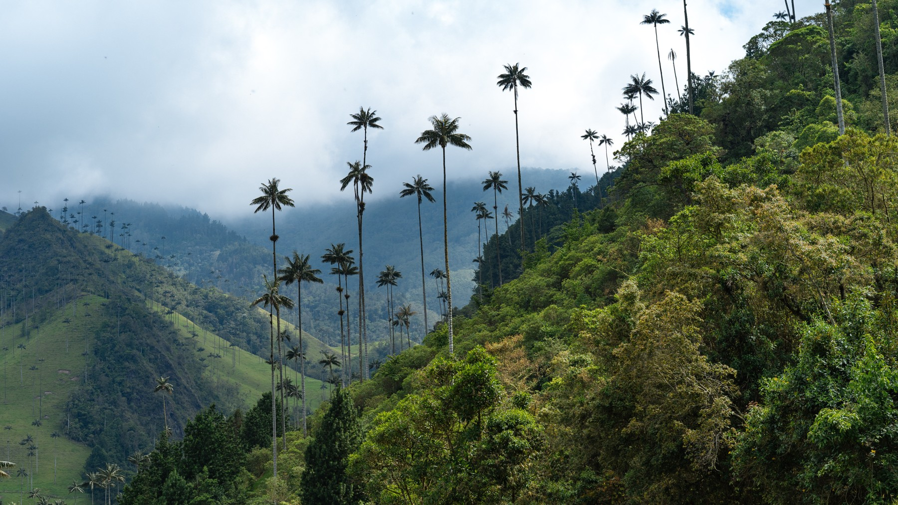
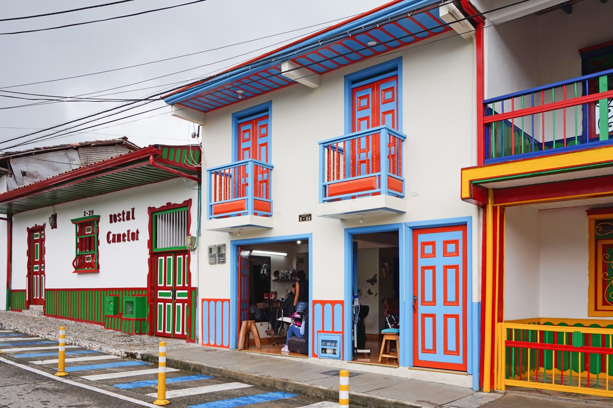

Cocora Valley, Quindío
Why I chose this topic
My project is about technology in Colombia. I want to understand how it affects everyday life and what it could mean for the country’s future. I’m looking at things like education, online banking, small businesses and cybersecurity. These are things people actually use. That makes the topic more interesting to me than just looking at new devices.
I chose this because I’m a Computer Science major and I work in cybersecurity. Technology is a big part of my life already. I use it for school and work every day. Learning about Colombia gives me a different way to look at it. I want to know what people find useful and what gets in their way.
I’m especially interested in who gets to benefit. A student with reliable internet has different options than someone without it. The same goes for a business trying to reach customers online. It’s easy to focus on big cities and miss what life is like in smaller communities.
Security matters to me too. People should be able to use these tools without constantly worrying about their information. More access can create opportunities. It also brings problems that need attention.
The bibliography brings together ten sources on these questions. It includes research on schools, businesses and internet access. There’s also a documentary about communities building their own networks. Each entry explains what the source says and why it matters to my project.
My main question
How is technology changing everyday life in Colombia? What could it mean for the country’s future?
